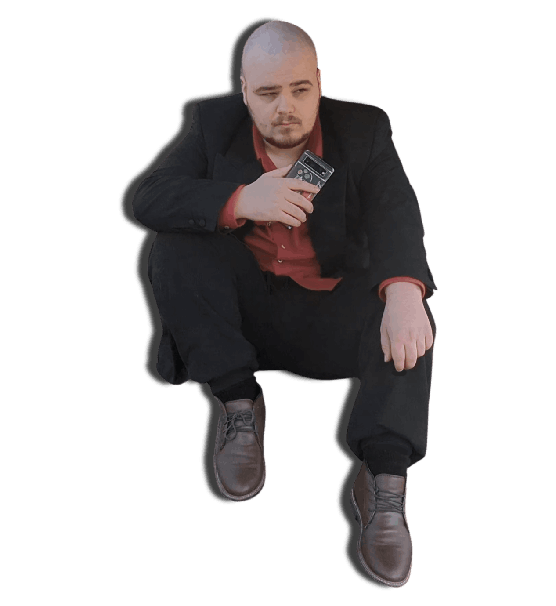
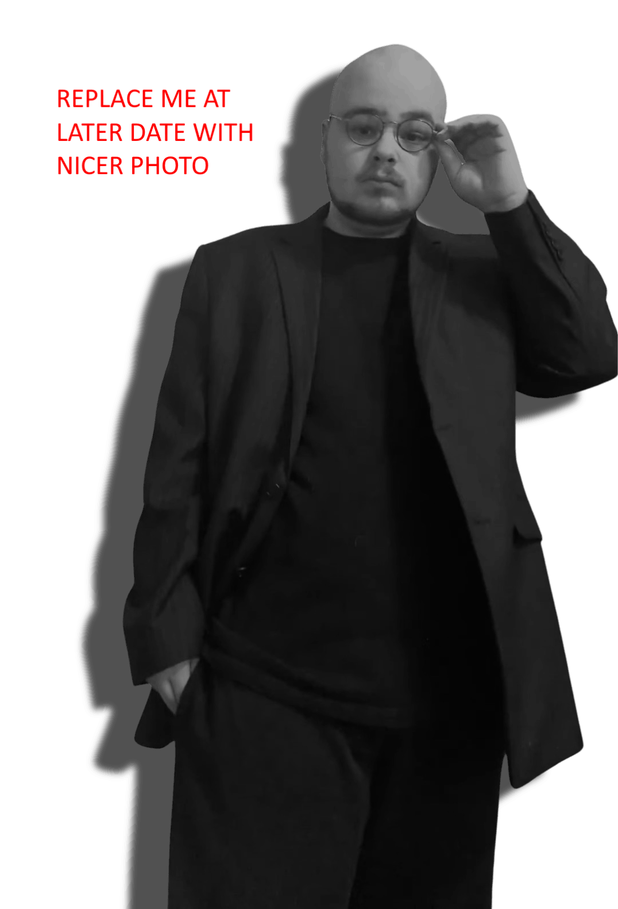

MobiriseThank you for coming to my website so soon! Unfortunately, it's still being created and elements may change or go missing as the website is being built. Once it is complete, this banner will be removed. Thanks! - Kieran (Lucious) Pallister

My name is Kieran (Lucious) Pallister. I'm a UK based composer and producer specialising in scoring for forms of media such as film and more interactive media such as videogames and I'd like to work with you!

Born in the early 2000's, music has always been an important aspect of my life. At a young age I aspired to some vague description of being a singer. Of course, being young there wasn't much more thought put into it than that. I spent my early to mid teens interested in performing arts, video editing, and film. It wasn't until I became a young adult that I landed on something I am truly passionate about: music production.
Having previously tested music software, I had some experience using it to record vocals and small lines for small projects with friends and associates. I learned how to produce fast and first came to work for Swedish production company DEP Films. It was through their help and guidance that I had the space to flourish and develop into the producer that I am now. Today I continue to create scores for them and others with a unique and captivating sound. I pride myself on defying expectations for what a medium should be expected to sound like and aim to always deliver something that is new but still satisfactory to the customer or client.
Here you will find a small summary of my abilities and an explanation of how they might suit your needs, should you choose to acquire me for your next project.
Mobirise